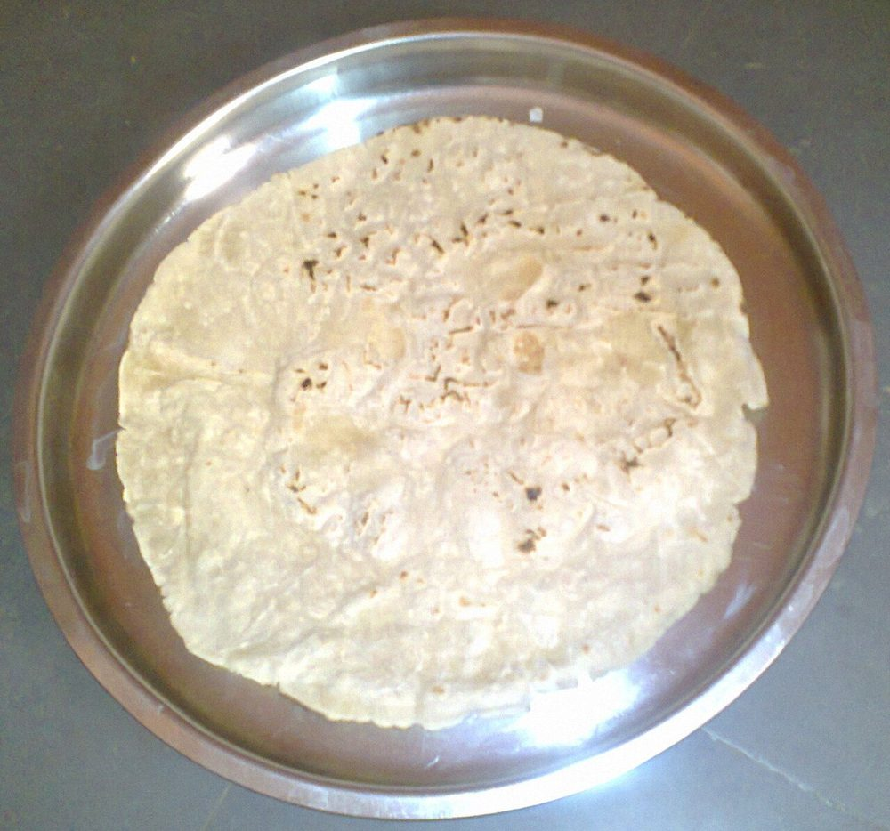

Allergens: none of the ten listed below
Ingredients
Quantities for 4.
- 2 cups Jowar Flourplus 1/2 cup extra for dusting and patting
- 1 1/2 cups Waterboiling hot
- 1/2 tsp Salt
Cookware
stovetop, tawa
Checked against the ingredient list for ten allergens: milk, egg, fish, crustaceans, tree nuts, peanuts, sesame, mustard, soy and gluten. Brands vary, so read the label on anything new to you.
Before you start
- Jowar has no gluten, so the dough is held together by hot water and kneading alone. The water must be at a full boil when it goes in.
- Set out a clean damp cloth or a sheet of parchment; north Karnataka cooks pat the rotti out by hand on it rather than rolling.
- Knead and rest the dough 10 minutes under a damp cloth before shaping, and keep it covered between rottis so it never dries.
Method
- Boil the water with the salt. Tip in the jowar flour all at once and stir with a wooden spoon until no dry flour remains.
- Cover and rest 5 minutes off the heat so the flour drinks the water.
- Turn out while still warm and knead 6 to 8 minutes with the heel of your hand until the dough is smooth, warm and slightly tacky, not crumbly.If it cracks when you press it, wet your palm and knead again. Underkneaded jowar dough will never hold a round.
- Divide into 8 balls and keep them under a damp cloth.
- Dust the work surface generously with dry jowar flour. Flatten one ball and pat it outward with flat fingertips, rotating as you go, into a 7-inch round about 2mm thick.Pat from the centre outward and rotate a quarter turn each time. That is what keeps it circular.
- Brush the excess flour off the round and lift it onto a hot tawa over medium heat.
- Cook 40 seconds until the surface dulls, then flip. Wipe a wet hand lightly over the top surface.The film of water is what makes it steam and balloon.
- Cook the second side 1 minute, then lift the rotti onto a direct flame or press it with a cloth on the tawa until it puffs into a dome, about 20 seconds.
- Stack the finished rottis in a cloth-lined basket and repeat with the rest.
Storage
Keeps 2 days wrapped in a cloth at room temperature and stiffens as it sits, which is intended. North Karnataka households eat day-old rotti with ennegayi and chutney pudi. Warm briefly on a tawa before serving.
Nutrition Good estimate
Low protein: 5 g a serving, 9% of the calories
| Per serving151 g | Per 100 g | |
|---|---|---|
| Calories | 217 kcal | 144 kcal |
| Protein | 5.1 g | 3 g |
| Carbohydrate | 46.3 g | 31 g |
| of which sugars | 1.2 g | 1 g |
| Fibre | 4.0 g | 3 g |
| Fat | 2.0 g | 1 g |
| of which saturated | 0.3 g | 0 g |
| of which unsaturated | 1.4 g | 1 g |
Estimated from raw ingredients using USDA FoodData Central.
More like this: Vegan Indian recipes · Vegetarian Indian recipes · Gluten-free Indian recipes · Dairy-free Indian recipes · No onion no garlic recipes · Karnataka recipes
Times, yields, allergens and nutrition are guidance. Use your own judgement on doneness and on storing. More in About.